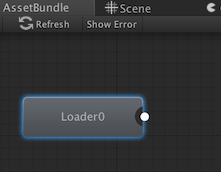
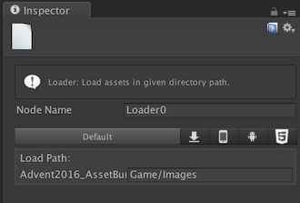

AssetBundleGraph作ってみた(準備中)
概要
本稿はUnity アドベントカレンダー (2) 12/23日の記事になる。
http://qiita.com/advent-calendar/2016/unity2
昨日は(この項目はまだ確定されていない)
明日は(この項目はまだ確定されていない)
AssetBundleとかUnityのAssetの設定とかをとにかく力強く楽に扱えるツール「AssetBundleGraph(ABG)」の話をする。
あと実は、このページはUnibook 総集編からも参照されている。
今回のお題目
AssetBundleGraphの使用例などを公開できればとおもう。
AssetBundleGraph
いろいろあって、UnityのAssetBundle(ほか)をフロー形式で作り出すツール制作のお手伝いをしていた。
これ。
新しいアセットバンドルツールのプロトタイプ
https://blogs.unity3d.com/jp/2016/10/25/new-assetbundle-graph-tool-prototype/
で、かかわった動機とか経緯とかは過去の記事にあるので興味のある人はどうぞ。うかつに人にいちゃもんをつけに行くと色々なことが起こるのがよくわかった。
http://sassembla.github.io/Public/2015:04:13%2019-06-37/2015:04:13%2019-06-37.html
-> 自作のAssetStoreにあるやつをプレゼンする -> じゃあお前やれよ(丸みを帯びた表現) -> ニュースリリースと。
すでに自分の手は離れており、BitBucket上でゴリゴリと開発/改良/改善が進められている。
で、今回はそんなAssetBundleGraphのサンプルを何パターンか作ってみよう、みたいな話。 だいじょうぶ、ファミ通でもなんでもない攻略本だよ。
！！注意！！
大事なことを言い忘れてた。
AssetBundleGraphは
AssetBundleを作るためだけに使えるツールでは
ない！！！
このツールは、いままで手でやっていたUnityのAsset一個ずつに対しての操作を、ルールベースでとにかく大雑把かつ人間より正確にサクッと実行する、というツールなのだ。
iOS用に全ての画像の設定を変えたりとか、英語版だからこのグラフィック使おうねとか、これらのモデルの設定を全部ああしますとかそういうのを
適当にまとめて実行できる
のだ。
複数のAssetから複雑なプレファブ作ったりするのも
適当にまとめて実行できる
のだ。プレファブまわりはさすがにちょっとコード要るんだけど。
たまたまその動作の一つとして
AssetBundleを作れる
というのがあるだけなのだ。
では例の紹介に行ってみよう。
AssetBundleGraph使用例6本ノック
取り上げさせてもらったネタはこちらのシートにあるやつのいくつか。
https://docs.google.com/spreadsheets/d/1jHv8mFy2HhnnXCRr0tXHRLzt0ve4xGJebas8Q9R31Mo/edit?usp=sharing
サンプルモリモリのリポジトリはこちら。
Advent2016_AssetBundleGraph
https://github.com/sassembla/Advent2016_AssetBundleGraph
サンプルはそれぞれブランチに分かれている。
各内容の解説は下の方に書いて行く。長い。
リポジトリにあるようなAsset生成が捗る環境を、手元に用意するには
readmeにも書くつもりだけれど、短いのでこちらにも書いておく
1.適当なリソースの入ったプロジェクトを用意する
もちろん、「あっAssetBundleGraph使ってAssetをゴインゴインしよう」っていう対象のAssetがいっぱいあるリポジトリとかでいいと思う。
もしくは、適当に空のプロジェクトを作って、適当に画像とかモデルとかをAssetsフォルダ以下に入れたものを用意するのでもいい。
2.bitbucketのライブラリからAssetBundleGraphをDLする
https://bitbucket.org/Unity-Technologies/assetbundlegraphtool/downloads
3.ダウンロードしてきたAssets/AssetBundleGraph フォルダを、1で用意したプロジェクトのAssetsフォルダに放り込む
準備は以上！
4.使う
メニュー > Window > AssetBundleGraph > Open Graph Editor で、グラフのウィンドウが表示されるので、右クリックでノードを作ったりいろいろする。
やりたいこと募集中(だった。)
なにぶんグラフィカルになんとかするのに特化してるツールなんで、とっつきやすいが深堀りするとなるとまあ、
本家のAssetBundle作りにならう感じで、まあ、例がない。
みなさんがやりたいことはたくさんあると思うんだけど、そのための例がない、という状況はめっちゃ肌感的に共感できるつもり(傲慢
というか自分が「わからねえぞ、、なんだこれはどうやればいいんだ、、」って思ったことがあるのもあって、少しでも人の理解を手伝いたい。
今回は最新版を使うのだけれど、自分が関わっていた時(だいたい今年の5月とか6月)より遥かにパワーアップしていた。恐ろしいツール。
なので、こう、
「こんなリソースをAssetbundleGraphで作るにはどうすればいいのか？」 みたいなリクエストを募ろうと思う。
まあ、気長に。
宛先はこちら。
AssetBundle(ほか)制作やっていき隊
https://docs.google.com/spreadsheets/d/1jHv8mFy2HhnnXCRr0tXHRLzt0ve4xGJebas8Q9R31Mo/edit?usp=sharing
ちなみに、
ラジオのお葉書みたいな感じで、稀に読み上げて参考にすることはあっても、絶対に応答があるわけではない。ごめん。
べつにAssetBundleGraphを使って解決しないかもしれないけど、別の手段はありそうな感じで。
みたいなことが書いてあったんですよ。アドベントカレンダー当日までは。
さてやっとここから、公募で適当に集まった例を実際にAssetBundleGraphでなんとかしてみたものの説明になる。
各お題は、同名のブランチがリポジトリ(https://github.com/sassembla/Advent2016_AssetBundleGraph)にあるので、それをDLしながら眺めてもらえるとわかりやすいと思う。
「この種類の画像はGUIに使うので、まるっと全部UI用の設定がしたい」、とかの要望があると思う。
あるいはもっと複雑な、「TextureのタイプをAdvancedにして、wrapモードをこれに変えて、そんでループを、、」とかをいちいち全部手でやると発狂しかけると思う。
そしてさらに、素材が入っているフォルダを分けたりするのが人情。一括での設定変換をこれでもかといわんばかりに難しくしてくれる。
そんな時、いちいちGUIから設定を変えることなく、一括で大量のファイルの設定を変更できる機能のデモが、このブランチ。
まず、グラフを右クリックして、Loaderノードを置く。

クリックすると、Inspectorが開く。で、ここでは、Assets/Game/Images っていうフォルダにサンプルとしてユニティちゃんとかの画像が置いてあるので、
その画像を読み込む(Loadする)ようにしてみる。

ちなみにAssets/Game/Imagesの中身はこんな感じ。画像いろいろ。
次に、グラフを右クリックしてImportSettingsノードを追加。

選択すると、Inspectorにこんな感じの見慣れないボタンが表示される。
で、Configure Import Settings ボタンを押すと、

Loaderがロードしてきた画像のInspectorに切り替わる。
さてとりあえず設定を弄ろう。

Advancedに変えて、いろいろ変えて、、、

で、設定を適応させる。ここまでは通常通りのImportSettingsの手順。

AssetBundleGraph実行！！(右のほうのBuildボタンを押す

そして、先ほどの画像が置いてあるフォルダを覗いてみると、、
すべての画像のセッティングが、先ほどセットした一枚の設定とクリソツになっている！

やったぜ！
置いたノードは2つだけだが、
・特定のフォルダにある画像全部に対して同じ設定を行う
というのが瞬殺できた。
応用としては、
複数のフォルダの画像を、複数のLoaderノードで読みこんで、一つのImportSettingsノードに流し込んで、全部一発で設定したり、
このフォルダ以下の画像で名前にUI_って含んである画像は～ みたいな分岐も作り出せる。(Filterノードを使う
また、ImportSettingsノードは、画像だけでなくAudio、Modelに対しても対応しているので、それらにも同じようなことが実現できる。
それ以外のAssetでは、Modifierノードを使うといい感じに編集できそう。
Prefab(プレファブ)を作成する、というのが、これが数がかさんでくると重労働だ。
たとえばPrefabの構成に変更があった時とか、手でやってると正直しんどい。ミスも出る。
じゃあスクリプトを書いて自動化する？ その自動化するコード毎回全部書くの？
という煽りに対して、AssetBundleGraphはわりといい感じの答えを用意してくれている。
PrefabBuilderノードを使うのだ。
まず、ユニティちゃんsの画像が入ったフォルダを、下記のように「キャラごとに」用意する。

各フォルダの中には、各キャラの立ち絵が6枚ずつ入っている。
今回はこの各キャラ6枚の絵を、アニメーションとしてTexture2Dの配列に格納したPrefabを、各キャラごとに一つ作る、というのをやってみる。
prefabの要件はこんな感じ。
・prefabを3キャラ分、各キャラ一個作る
・prefabの内容は、GameObjectに特定のScriptがセットされている & ScriptのTexture2D[] texturesには各キャラのTextureが6枚ずつセットされている。
さて、やっていこう。
とりあえず素材を用意した段階で、フォルダ名に注目してほしい。
フォルダ名は、chara_キャラ名 という感じで、ルールをもたせてある。
このルールを利用して、prefabづくりを簡単にすることができる。
そしてprefabになるGameObjectにセットするScriptだが、これは自分で用意する。
サンプルでは Assets/MyCubeScript.cs というScriptを用意した。
MyCubeScript.cs
内容は至って簡単、Texture2D[] textures というパラメータを、lengthが６だと指定して初期化してあるだけ。
では、これらを使ってprefabを作る工程に入ろう。
まずはLoaderノードを置き、ロードする素材のパスをセットする。

Assets/Game/Images フォルダ以下に上記の3キャラのフォルダが入っているので、指定。

次に、Groupingノードを作成する。Loaderと適当につなごう。

そしてGroupingノードを選択して、InspectorからGrouping Keywordを編集する。

ここでは、<chara_*/> という文字列を入れている。
こう書くと、「chara_なにか/」というパターンで、
Loaderから流れてきているAssetのパスをもとに、
素材を複数のグループに分割することができる。
ちょっと何いってるかわからないので、仮にBundleConfigノードを作って置いてつないでみよう。

18:3 みたいな表記が、接続線の上に表示されたと思う。このボタンを押すと、接続線を流れるAssetsの内容が、Inspectorに表示される。
お判りだろうか。18個のAssetsが、3つのグループに分割されているのが。

お判りだろうか。Group Key: のところに、kohaku, misaki, yuko とかキャラ名が入っているのが。
Groupingノードでは、あらかじめフォルダ名にルールをつけておくことで、それらをグループ名にしてAssetsをグループ化することができるのだ。
いや～これ思いついた時は俺すげーって思ったよ。
で、
やりたいことは「これらのグループ化されたAssetsからprefabを作る」ということなので、
BundleConfigノードは一回消そう。
PrefabBuilderノードを作成する。と、エラーが出る。

なになに？ って選択してInspectorを見に行くと、
「PrefabBuilderにはPrefabBuilder scriptが必要だよ」と出る。

すいませんそうなんです。script要るんです。
でもこれも作成できるんだよこのツール。
ツールバー > Window >AssetBundleGraph > Create Node Script > PrefabBuilder Script を選択。

選択すると、scriptが作成されて、コンパイルが走る。
で、コンパイルが終わったら、PrefabBuilderを選択して、
PrefabBuilderというパラメータのドロップダウンをクリックし、MyBuilderを選ぼう。

すると、PrefabBuilderノードにMyBuilderというコードがセットされ、
エラーが消える。
以降、PrefabBuilderノードが実行されると、MyBuilderというコードが自動的に実行されるようになる。

MyBuilderのコードは、作成直後は雛形のような感じになっている。
コードは次のパスにある。
Assets/AssetBundlerGraph/Generated/Editor/MyPrefabBuilder.cs
内容はこんな感じ。解説は日本語でお送りします
MyPrefabBuilder.cs
やっていることは、
・CanCreatePrefab関数で、ABG実行前のRefresh時に実行される関数の結果として、入力されてくるデータのチェックや、チェックがOKだったらprefab名を返す処理を書く。このprefab名はABG実行時に使用される(その名前のprefabがダイレクトに作られる)。
・CreatePrefab関数で、ABG実行時に実行されてほしい処理を書く。
まずはCanCreatePrefab関数の内容を見る。
/**
* Test if prefab can be created with incoming assets.
* @result Name of prefab file if prefab can be created. null if not.
*/
public string CanCreatePrefab (string groupKey, List<UnityEngine.Object> objects) {
/*
この関数では、セッティングの途中で「どんなオブジェクトがAssetBundleGraphから流れてくるか」というのをチェックしたりすることができる。
ここでは各グループで6つずつのTextureが来るはずなので、
6枚テクスチャがあったらPrefabができる という予定で値を返してみる。
*/
if (objects.Count != 6) {
// 足りない！
Debug.LogError("texture shortage. groupKey:" + groupKey);
return null;
}
foreach (var obj in objects) {
if (obj.GetType() != typeof(Texture2D)) {
// テクスチャ2Dじゃない！！
Debug.LogError("obj is not Texture2D. obj:" + obj + " in groupKey:" + groupKey);
return null;
}
}
// 入力されてるアセット的にOKだったら、最終的に作るつもりのPrefabの名前を返す。
// ここでは、prefab_kohaku とかそういうのを想定している。
return "prefab_" + groupKey;
}
この関数はちょっと難解で、ABGが自動的に作ったテンプレっぽい内容を書き換えて、次のようなことをしている。
・objectsがテクスチャ6枚のセットであること
・もしそうだったら、”prefab_” + groupKey という文字列を返すこと
最後に返しているstringは、「無事にprefabが生成されたらこの名前にする」というパラメータになっている。
で、groupKeyという引数には、今回の構成の場合、さきほどGroupingで分けた、「kohaku」「misaki」「yuko」という文字列が入ってくる。
Groupingした素材のグループ観で切り分けられたリソースに対して、対応するようにこの関数が呼ばれるのだ。
これによって、
1.グループを作る
2.グループに対して処理をする(特にこの場合prefabを作る)
ということが大変やりやすくなっている。
で、次にCreatePrefab関数の中身を見よう。
/**
* Create Prefab.
*/
public UnityEngine.GameObject CreatePrefab (string groupKey, List<UnityEngine.Object> objects) {
// objectsの中身はTexture2Dなので、UnityEngine.ObjectからTexture2Dに変換する。
var textures = new Texture2D[6];
for (var i = 0; i < objects.Count; i++) {
var obj = objects[i];
textures[i] = obj as Texture2D;
}
// GameObjectを作成する。ここではCubeが好きなのでCubeを作る。
GameObject go = GameObject.CreatePrimitive(PrimitiveType.Cube);
// 今回Texture2Dを６枚セットする対象のスクリプトを、goにくっつける。
MyCubeScript myCubeScr = go.AddComponent<MyCubeScript>();
// myCubeScrのtextures(Texture2DのArray)に、ダイレクトにセット。
myCubeScr.textures = textures;
/*
最終的にGameObjectを返すと、そのGameObjectが自動的にPrefabになる！
わあPrefabできちゃったよ。
名前はCanCreatePrefab関数で返したものが使われる。
*/
return go;
// そしてなんと、このGameObjectはこのあと自動的に消去される。
}
やっていることは、ものすごくダイレクトな感じ。
・ローカル変数 Texture2D[] texturesを作り、CreatePrefab関数の引数 objects として流れてくるAssets(全部Texture2Dのインスタンス)をセットする
・GameObjectを作ってMyCubeScriptをAddして、
・myCubeScrのtexturesというインスタンスに、冒頭で作ったtexturesをセット。
これで、あとはGameObject goを、この関数の返り値としてreturnするだけ。
するだけで、GameObject goは勝手に、キャラのテクスチャ6枚を含んだtextures配列 を持ったMyCubeScript がセットされた prefabになる。
このprefab、特にExportする先をExporterノードなどで指定しなければ、ABGのキャッシュ内に出力される。
具体的にいうと次の図のようなところに吐かれる。

で、内容を確認してみると、、

ちゃんとテクスチャ全部セットされてる。やったぜ！
どうだろうか。
いままで手で書いてたコード、毎回構築していたルール、みたいなのと比べて、楽じゃねーかな？
複数のPrefabを作るにはどうすればいいのか？とかは、多分複数のPrefabBuilderを用意すればいいんじゃないかな～と思う。
プラットフォーム指定してコマンドラインから起動
完了後に独自の処理を行う
variantsでABの中身を指定する
プラットフォームごとに異なる素材、異なるimportSettingsを指定する